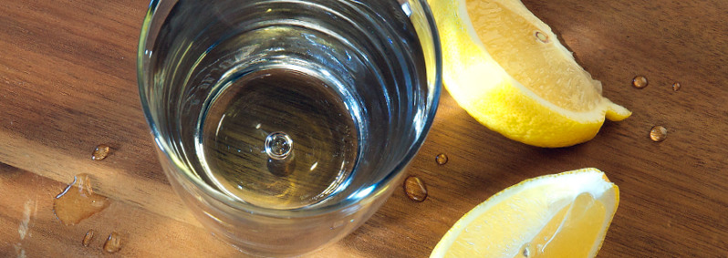
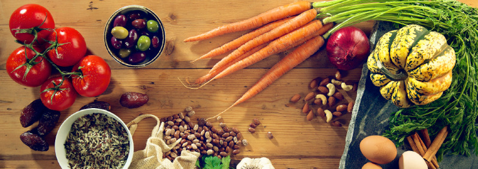
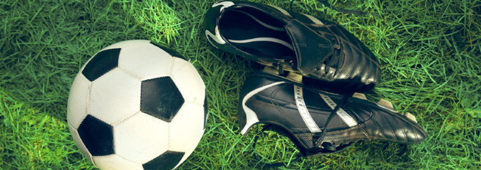
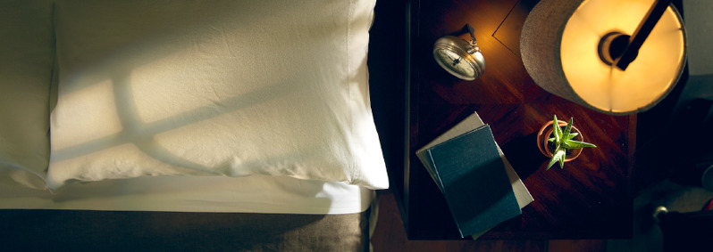

1.Дотримуйтесь правил гігієни
За словами фахівців клініки Мейо, «один з найефективніших способів уникнути хвороб та
запобігти їх поширенню» — це мити руки. Дуже
легко підхопити застуду чи грип, якщо просто потерти
ніс або очі руками, на яких є збудники цих хвороб. Тож найкращий захист від інфекції —
це регулярне миття рук.
Дотримання правил гігієни може також запобігти серйознішим недугам, як-от пневмонії
та хворобам, що
супроводжуються діареєю. Через ці захворювання у світі щороку помирає понад
два мільйони дітей у віці до п’яти років. Миючи руки, можна
запобігти поширенню навіть
смертельної лихоманки Ебола.Коли це робити?
- Після користування туалетом.
- Перед тим як готувати, подавати на стіл та споживати їжу.
- Після чхання, кашляння та сякання носа.
- Після контакту з тваринами чи їхнім послідом.
- До та після контакту з хворим.
- Після контакту зі сміттям.
- Тріть руки принаймні 20 секунд.
2.Користуйтесь чистою водою
- Подбайте, щоб уся питна вода, якою ви користуєтесь,— у тому числі вода для миття продуктів
та посуду, приготування їжі, виготовлення
льоду та чищення зубів,— походила з безпечного джерела. Це може бути належно очищена вода з водопроводу або вода в пляшках
від надійного виробника -
Якщо існує хоч якась імовірність того, що водопровідна вода забруднена, кип’ятіть її перед
використанням або знезаражуйте хімічним
способом. - Користуйтеся фільтрами для очищення води, якщо вони доступні та якщо у вас є на це кошти.
- Очищену воду завжди зберігайте в чистих закритих ємностях, аби вберегти її від повторного забруднення.
3.Слідкуйте за тим,що їсте
- Ретельно мийте овочі перед приготуванням, адже їх можуть вирощувати на землі, удобреній гноєм.
- Перш ніж щось готувати, мийте гарячою водою з милом руки, посуд, робочі поверхні, кухонні дошки та інше приладдя.
- Аби уникнути передачі інфекції, ніколи не кладіть їжу на поверхню чи тарілку, на яких перед тим лежали сирі
яйця, м’ясо чи риба.
Спочатку помийте цю поверхню або тарілку. - Готуйте їжу при належній температурі. Їжу, котра швидко псується, якнайскоріше ставте у холодильник, якщо не
плануєте
споживати її найближчим часом.
4.Будьте фізично активними

Оберіть заняття, котре приносить вам задоволення. Це може бути баскетбол, теніс, футбол, швидка ходьба, їзда
на велосипеді, садівництво,
рубання дров, плавання, веслування, біг чи будь-яке інше аеробне навантаження.
Щоб добре почуватись, усім нам, незалежно від віку,
слід бути фізично активними. Сьогодні багато людей мало
рухається. Чому фізичні вправи такі важливі? Фізична активність допоможе вам:
- Мати хороший сон.
- Зберігати рухливість.
- Не втрачати міцності кісток та м’язів.
- Схуднути або підтримувати нормальну вагу.
- Зменшити ймовірність депресії.
- Знизити ризик передчасної смерті.
5.Добре висипляйтесь

Потреба у сні в різних людей неоднакова. Більшість новонароджених сплять 16—18 годин на день; діти, які
починають ходити,— близько 14 годин,
а дошкільнята — коло 11—12. Діти молодшого шкільного віку потребують
принаймні 10 годин сну, підлітки — приблизно 9—10 годин, а дорослі —
від 7 до 8 годин.
Не варто нехтувати належним нічним відпочинком. Фахівці кажуть, що повноцінний сон важливий для:
А як вам бути, коли бачите,
що у вас проблеми зі сном?
- Старайтесь лягати спати та вставати у той самий час.
- Подбайте, щоб у вашій спальні було тихо, темно й затишно. У ній не має бути гаряче, ані надто холодно.
- Коли ви у ліжку, не дивіться телевізор та не користуйтесь електронними пристроями.
- Подбайте, щоб ваше ліжко було максимально зручним.
- Не споживайте перед сном калорійної їжі, кофеїну та алкоголю.
Ваше здоров’я залежить від чинників, на які ви не маєте впливу, наприклад від економічних
умов, доступу до ресурсів тощо. Все ж вам, мабуть, під силу
застосувати принаймні деякі поради з цих статей.